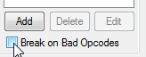
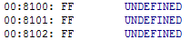
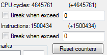
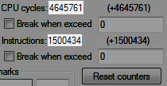
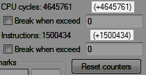
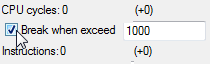

Содержание
Брейкпоинт рекомендуется для регулярного использования новичками. Галочка находится под списком брейкпоинтов.

Состояние галочки не хранится в файле .deb, ее нужно выставлять самостоятельно.
Условие данного брейкпоинта - приостановить эмуляцию при попытке выполнить команду UNDEFINED.

Этот тип брейкпоинта подходит для тестирования своего кода, чтобы убедиться, что прыжки и условные переходы были записаны верно. Также поможет заметить ошибку в коде из-за неправильно подключенного номера банка PRG. Если брейкпоинт срабатывает во время игры, то даже когда в геймплее багов не заметно, в коде явно что-то не в порядке.
Брейкпоинт не всегда помогает найти неправильно записанную команду, поскольку даже кривой прыжок может перейти на опкод, который будет распознан Debugger'ом как один из известных ему, и брейкпоинт не сработает. Но в любом случае данный брейкпоинт увеличит твои шансы в поисках бага.
CPU cycles - счетчик тактов, Instructions - счетчик выполненных команд. Оба счетчика находятся под флагами.

Число рядом со счетчиком отображает его накрутку с момента его последнего обнуления.

Даже если окно Debugger'а ни разу не было открыто после запуска эмулятора, счетчики все равно будут накручиваться в процессе эмуляции игры.
Число в скобках отображает его накрутку с момента последней паузы эмулятора.

Например, можно будет посмотреть количество выполненных команд между двумя срабатываниями брейкпоинтов.
Кнопка Reset counters обнуляет все показания обоих счетчиков сразу.
Счетчики автоматически обнуляются после Soft Reset и Hard Reset, а также при первом запуске игры.
Выполнение одной команды занимает у процессора от 2-х до 6-ти тактов. При выполнении команды счетчик будет увеличиваться на то число, сколько тактов потребовалось у процессора на выполнение этой команды.
Один кадр длится примерно 30.000 тактов, потом начинается следующий кадр. Если один из твоих брейкпоинтов в списке срабатывает ежекадрово, то количество тактов между срабатываниями поможет это подтвердить.
С помощью просмотра данных счетчика тактов можно оценить нагрузку определенной части кода на процессор.
Чтобы выставить условие на количество тактов, эмулятор должен стоять на паузе, затем нужно обнулить счетчик. Далее в поле ввода ты указываешь нужное количество тактов, и ставишь галочку.

После этого снимаешь эмулятор с паузы. Debugger остановит эмуляцию игры в том случае, если выполненные команды накрутят 1000 или более тактов.
Прежде чем снять эмулятор с паузы, нужно деактивировать галочку. Иначе эмулятор при попытке сняться с паузы просто выполнит следующую команду и снова встанет на паузу, поскольку условие брейкпоинта "приостановить эмуляцию при достижении >= тактов в условии" будет действовать постоянно.
Счетчик выполненных команд будет просто увеличиваться на 1 после каждой выполненной команды. На него можно ставить условие точно также, как и на счетчик тактов, и работать он будет по такому же принципу.
Этот счетчик гораздо менее полезен по сравнению со счетчиком тактов.